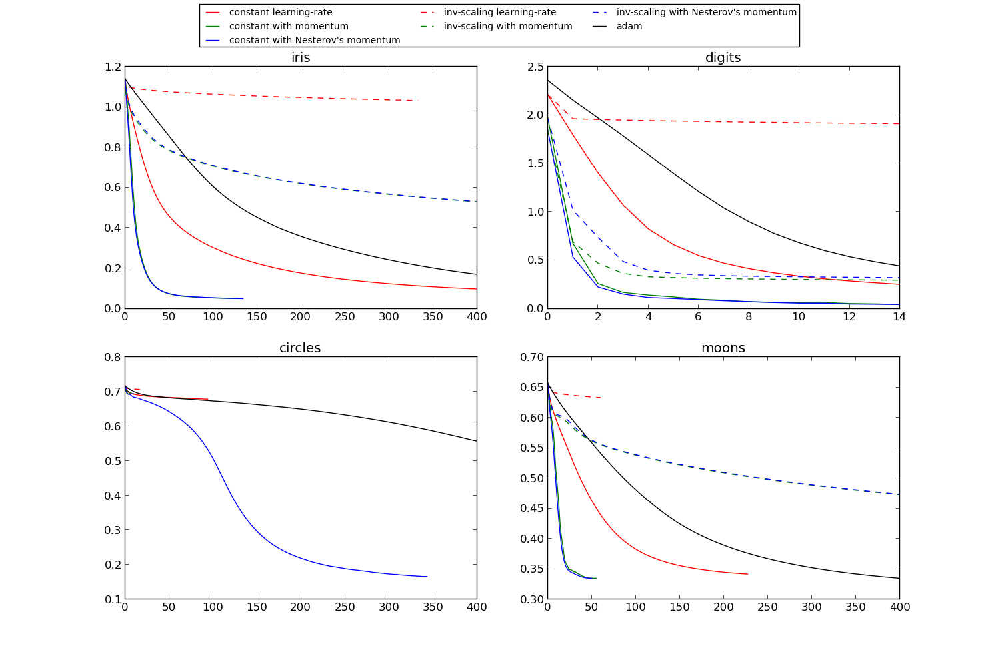

Compare Stochastic learning strategies for MLPClassifier¶
This example visualizes some training loss curves for different stochastic learning strategies, including SGD and Adam. Because of time-constraints, we use several small datasets, for which L-BFGS might be more suitable. The general trend shown in these examples seems to carry over to larger datasets, however.
Script output:
learning on dataset iris
training: constant learning-rate
Training set score: 0.973333
Training set loss: 0.098011
training: constant with momentum
Training set score: 0.980000
Training set loss: 0.050168
training: constant with Nesterov's momentum
Training set score: 0.980000
Training set loss: 0.050133
training: inv-scaling learning-rate
Training set score: 0.633333
Training set loss: 1.032142
training: inv-scaling with momentum
Training set score: 0.860000
Training set loss: 0.529899
training: inv-scaling with Nesterov's momentum
Training set score: 0.860000
Training set loss: 0.530948
training: adam
Training set score: 0.966667
Training set loss: 0.170472
learning on dataset digits
training: constant learning-rate
Training set score: 0.952699
Training set loss: 0.251749
training: constant with momentum
Training set score: 0.993322
Training set loss: 0.043992
training: constant with Nesterov's momentum
Training set score: 0.993322
Training set loss: 0.043968
training: inv-scaling learning-rate
Training set score: 0.641625
Training set loss: 1.911581
training: inv-scaling with momentum
Training set score: 0.917641
Training set loss: 0.294868
training: inv-scaling with Nesterov's momentum
Training set score: 0.913189
Training set loss: 0.321059
training: adam
Training set score: 0.936004
Training set loss: 0.440831
learning on dataset circles
training: constant learning-rate
Training set score: 0.570000
Training set loss: 0.678999
training: constant with momentum
Training set score: 0.430000
Training set loss: 0.697175
training: constant with Nesterov's momentum
Training set score: 0.930000
Training set loss: 0.165652
training: inv-scaling learning-rate
Training set score: 0.610000
Training set loss: 0.706786
training: inv-scaling with momentum
Training set score: 0.450000
Training set loss: 0.694934
training: inv-scaling with Nesterov's momentum
Training set score: 0.400000
Training set loss: 0.695454
training: adam
Training set score: 0.900000
Training set loss: 0.557896
learning on dataset moons
training: constant learning-rate
Training set score: 0.850000
Training set loss: 0.341627
training: constant with momentum
Training set score: 0.850000
Training set loss: 0.334766
training: constant with Nesterov's momentum
Training set score: 0.850000
Training set loss: 0.334590
training: inv-scaling learning-rate
Training set score: 0.670000
Training set loss: 0.633410
training: inv-scaling with momentum
Training set score: 0.820000
Training set loss: 0.473458
training: inv-scaling with Nesterov's momentum
Training set score: 0.820000
Training set loss: 0.473958
training: adam
Training set score: 0.870000
Training set loss: 0.334795
Python source code: plot_mlp_training_curves.py
print(__doc__)
import matplotlib.pyplot as plt
from sklearn.neural_network import MLPClassifier
from sklearn.preprocessing import MinMaxScaler
from sklearn import datasets
# different learning rate schedules and momentum parameters
params = [{'algorithm': 'sgd', 'learning_rate': 'constant', 'momentum': 0,
'learning_rate_init': 0.2},
{'algorithm': 'sgd', 'learning_rate': 'constant', 'momentum': .9,
'nesterovs_momentum': False, 'learning_rate_init': 0.2},
{'algorithm': 'sgd', 'learning_rate': 'constant', 'momentum': .9,
'nesterovs_momentum': True, 'learning_rate_init': 0.2},
{'algorithm': 'sgd', 'learning_rate': 'invscaling', 'momentum': 0,
'learning_rate_init': 0.2},
{'algorithm': 'sgd', 'learning_rate': 'invscaling', 'momentum': .9,
'nesterovs_momentum': True, 'learning_rate_init': 0.2},
{'algorithm': 'sgd', 'learning_rate': 'invscaling', 'momentum': .9,
'nesterovs_momentum': False, 'learning_rate_init': 0.2},
{'algorithm': 'adam'}]
labels = ["constant learning-rate", "constant with momentum",
"constant with Nesterov's momentum",
"inv-scaling learning-rate", "inv-scaling with momentum",
"inv-scaling with Nesterov's momentum", "adam"]
plot_args = [{'c': 'red', 'linestyle': '-'},
{'c': 'green', 'linestyle': '-'},
{'c': 'blue', 'linestyle': '-'},
{'c': 'red', 'linestyle': '--'},
{'c': 'green', 'linestyle': '--'},
{'c': 'blue', 'linestyle': '--'},
{'c': 'black', 'linestyle': '-'}]
def plot_on_dataset(X, y, ax, name):
# for each dataset, plot learning for each learning strategy
print("\nlearning on dataset %s" % name)
ax.set_title(name)
X = MinMaxScaler().fit_transform(X)
mlps = []
if name == "digits":
# digits is larger but converges fairly quickly
max_iter = 15
else:
max_iter = 400
for label, param in zip(labels, params):
print("training: %s" % label)
mlp = MLPClassifier(verbose=0, random_state=0,
max_iter=max_iter, **param)
mlp.fit(X, y)
mlps.append(mlp)
print("Training set score: %f" % mlp.score(X, y))
print("Training set loss: %f" % mlp.loss_)
for mlp, label, args in zip(mlps, labels, plot_args):
ax.plot(mlp.loss_curve_, label=label, **args)
fig, axes = plt.subplots(2, 2, figsize=(15, 10))
# load / generate some toy datasets
iris = datasets.load_iris()
digits = datasets.load_digits()
data_sets = [(iris.data, iris.target),
(digits.data, digits.target),
datasets.make_circles(noise=0.2, factor=0.5, random_state=1),
datasets.make_moons(noise=0.3, random_state=0)]
for ax, data, name in zip(axes.ravel(), data_sets, ['iris', 'digits',
'circles', 'moons']):
plot_on_dataset(*data, ax=ax, name=name)
fig.legend(ax.get_lines(), labels=labels, ncol=3, loc="upper center")
plt.show()
Total running time of the example: 6.75 seconds ( 0 minutes 6.75 seconds)